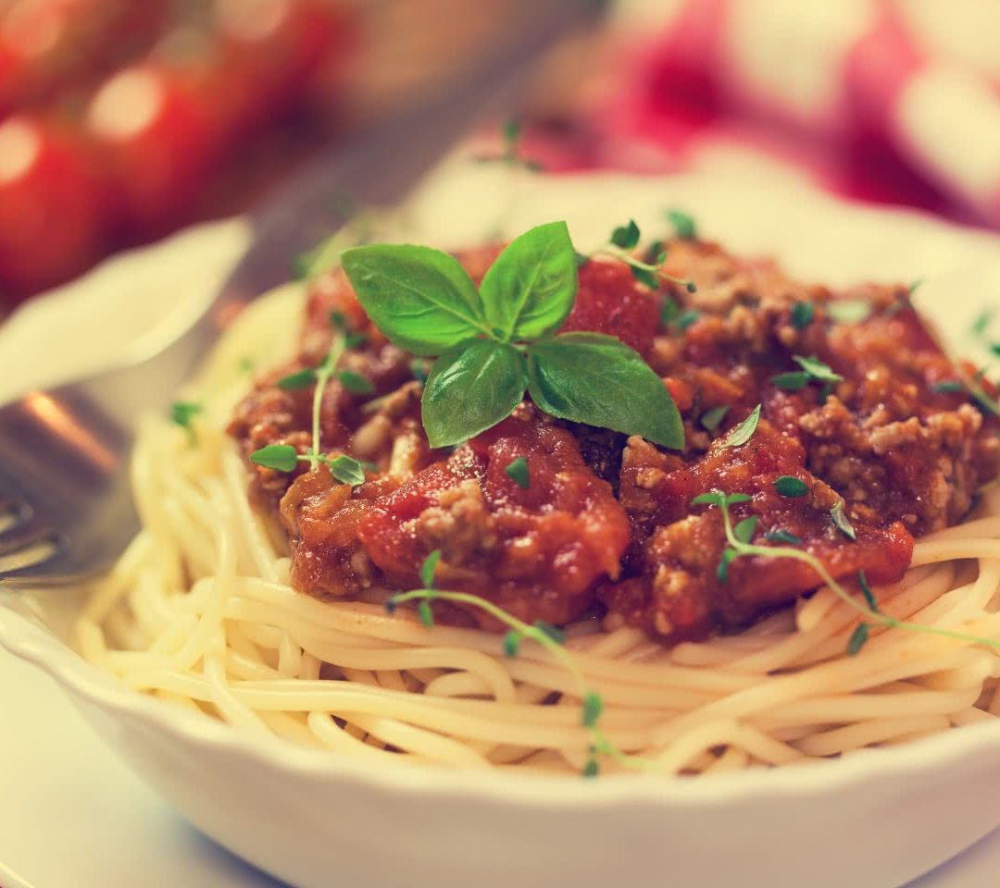

Spaghetti Bolognese

Spaghetti bolognese consists of spaghetti (long strings of pasta) with an Italian ragù (meat sauce) made with minced beef, bacon and tomatoes, served with Parmesan cheese. Spaghetti bolognese is one of the most popular pasta dishes eaten outside of Italy.
It is a corrupted version of the traditional ragù alla Bolognese: pasta with a meat sauce as they make it in the city of Bologna. But calling spaghetti bolognese an Italian dish would be a step too far, and many Italians would be disappointed with the description.
This is because, in Italy, there are many types of ragù, including the one from Bologna. Bolognese sauce should only ever be served with fresh tagliatelle, tortellini or lasagne; never with spaghetti as the sauce is thick and contains pieces, so will not satisfactorily cling to thin, delicate strings. A firmer pasta is needed as, according to the average Italian, a firm sauce needs firm pasta - it's as simple as that.
As an example of the passion Italians reserve for their cuisine and all of its regional varieties, a lively discussion arose in 2016 after The New York Times gave a recipe for “white bolognese”. A bolognese sauce without tomatoes? “Unthinkable” was the clear message from the readers. But no matter your feelings about tradition and ingredients, spaghetti bolognese is one of the most widely eaten and beloved dishes. All over the world, it is found on the menu of just about every Italian restaurant.
Ingredients
- 1 tbsp olive oil
- 4 rashers smoked streaky bacon, finely chopped
- 2 medium onions, finely chopped
- 2 carrots, trimmed and finely chopped
- 2 celery sticks, finely chopped
- 2 garlic cloves finely chopped
- 2-3 sprigs rosemary leaves picked and finely chopped
- 500g beef mince
For the bolognese sauce
- 2 x 400g tins plum tomatoes
- small pack basil leaves picked, ¾ finely chopped and the rest left whole for garnish
- 1 tsp dried oregano
- 2 fresh bay leaves
- 2 tbsp tomato purée
- 1 beef stock cube
- 1 red chilli deseeded and finely chopped (optional)
- 125ml red wine
- 6 cherry tomatoes sliced in half
To season and serve
- 75g parmesan grated, plus extra to serve
- 400g spaghetti
- crusty bread to serve (optional)
Steps
- Put a large saucepan on a medium heat and add 1 tbsp olive oil.
- Add 4 finely chopped bacon rashers and fry for 10 mins until golden and crisp.
- Reduce the heat and add the 2 onions, 2 carrots, 2 celery sticks, 2 garlic cloves and the leaves from 2-3 sprigs rosemary, all finely chopped, then fry for 10 mins. Stir the veg often until it softens.
- Increase the heat to medium-high, add 500g beef mince and cook stirring for 3-4 mins until the meat is browned all over.
- Add 2 tins plum tomatoes, the finely chopped leaves from ¾ small pack basil, 1 tsp dried oregano, 2 bay leaves, 2 tbsp tomato purée, 1 beef stock cube, 1 deseeded and finely chopped red chilli (if using), 125ml red wine and 6 halved cherry tomatoes. Stir with a wooden spoon, breaking up the plum tomatoes.
- Bring to the boil, reduce to a gentle simmer and cover with a lid. Cook for 1 hr 15 mins stirring occasionally, until you have a rich, thick sauce.
- Add the 75g grated parmesan, check the seasoning and stir.
- When the bolognese is nearly finished, cook 400g spaghetti following the pack instructions.
- Drain the spaghetti and either stir into the bolognese sauce, or serve the sauce on top. Serve with more grated parmesan, the remaining basil leaves and crusty bread, if you like.